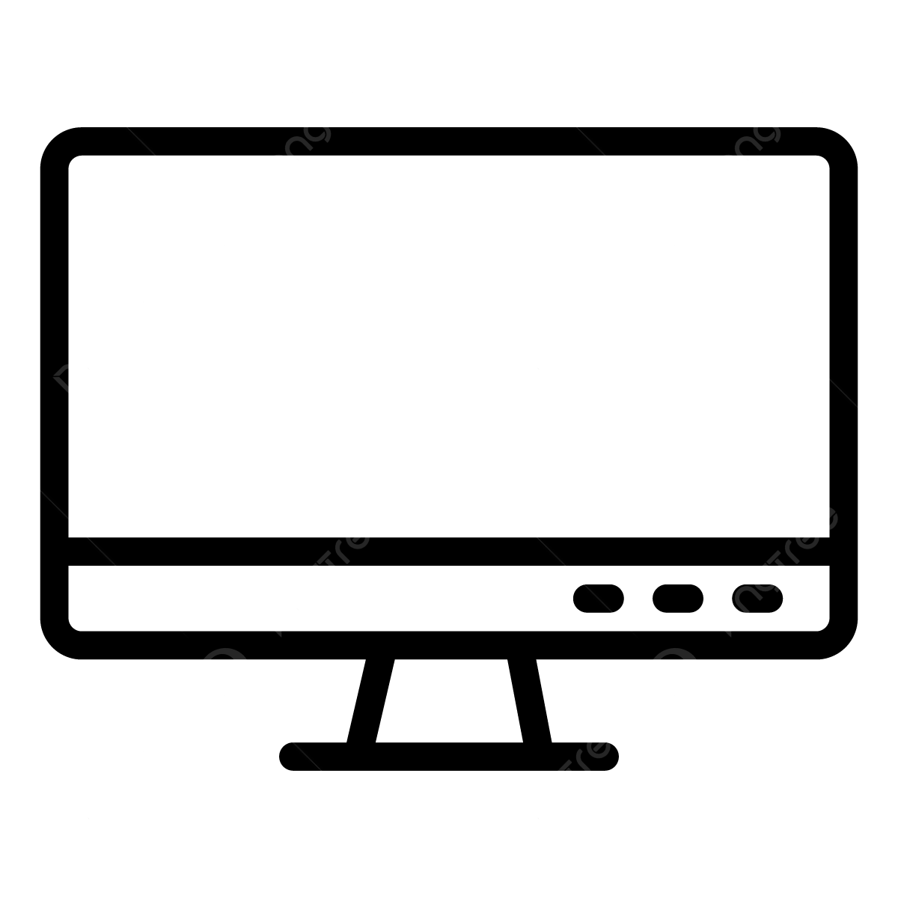

Mobile Alert
Open in your mobile and put it in your pocket. You will get an alert when quality drops.

Open in your mobile and put it in your pocket. You will get an alert when quality drops.
Display in a large screen on the plant floor. Operators can see from far when quality drops.
Find out if a batch will produce a good result or a bad result - without running it.
Re-run the last batch to explore the minimal change to improve batch quality.